MINI DUNGEON / SHRINE ROOM
WHAT IT IS
A mini dungeon is a short, sealed side trip: you walk through a portal or into a cave, clear three or four small rooms, beat a mini-boss and walk out with a reward, in about ten minutes. It is the Zelda shrine and Destiny Lost Sector idea from GW2-ZONES §7.1: one bite-sized challenge that fits a phone session and doesn't keep you out of the world for long. Each room tests one thing (a puzzle, a fight, a climb), and because the rooms are an interior, a lot of play costs almost no map space.
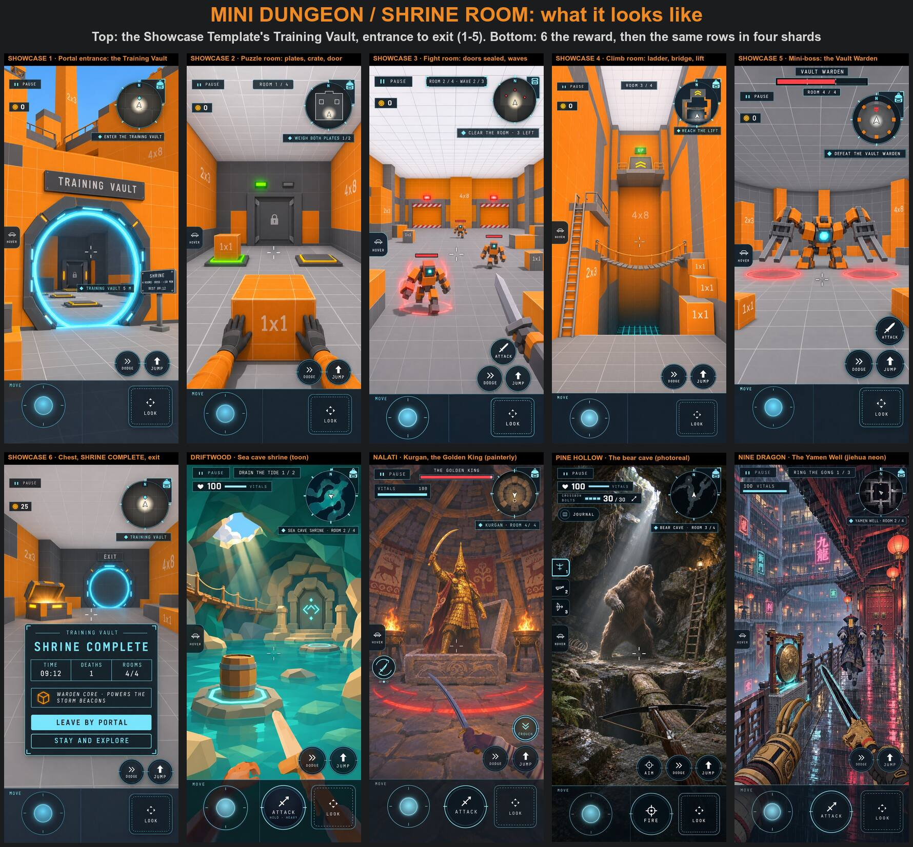
THE LOOP
- Enter through a walk-in portal or a cave mouth. A plate by the door shows the rooms, the rough time and your best time.
- Puzzle room: pressure plates, a crate to push, a door that opens when both plates are held.
- Fight room: the doors seal, two or three small waves come, the doors open when the last enemy dies.
- Climb room: ladder, scramble blocks, a rope bridge and a lift up to the last door.
- Mini-boss: a boss bar, telegraphed hits, two phases.
- Reward and exit: a chest, a "SHRINE COMPLETE" card (time, deaths, rooms) and an exit portal back to where you came in.
Checkpoints: walking into a room makes it your checkpoint. Death: you come back at that room's door; a fight restarts its wave, a solved puzzle stays solved, the mini-boss heals to full. Nothing is lost by dying or by walking out. Replay: the chest pays once; after that it is a time trial against your best.
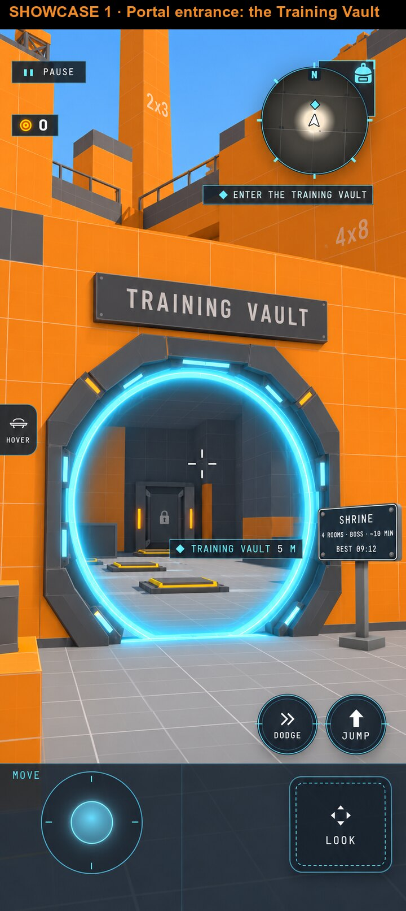
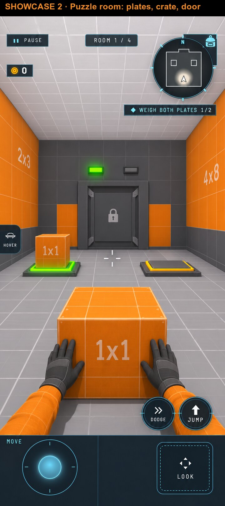
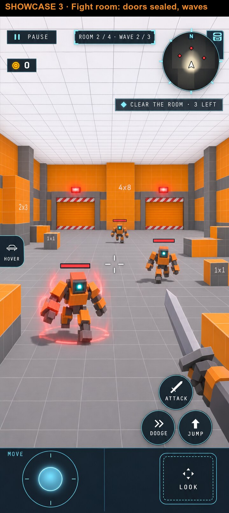
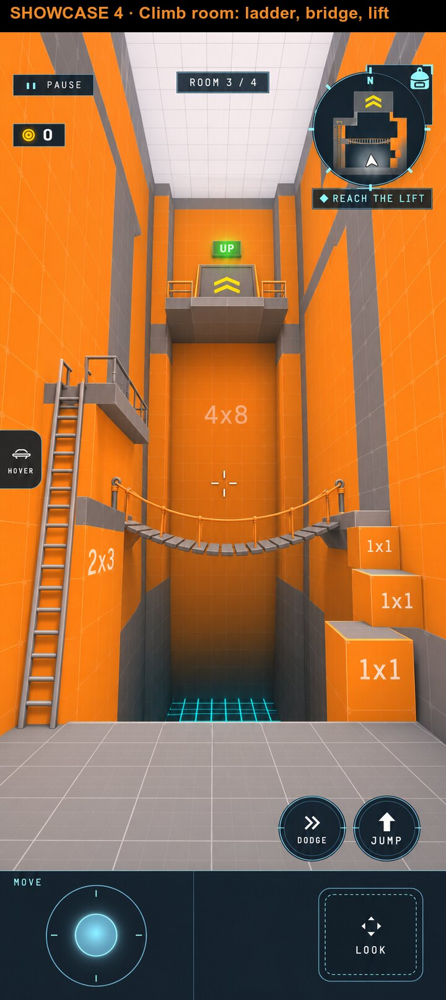
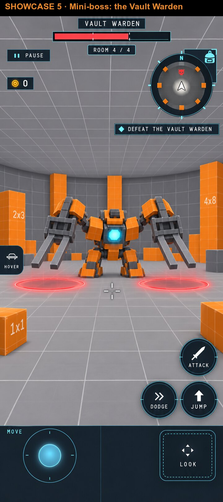
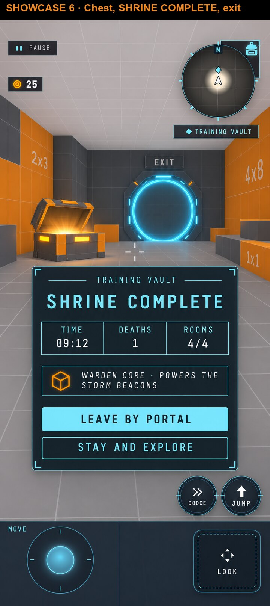
IN THE KITCHEN SINK
- Where: it is the Training Vault, zone 12. The portal stays in the hub's orange wall (the round-5 frame); the four rooms are an interior, so they take no ground in the 500 × 500 m cell. That is the v2 rule "fit more by stacking and interiors".
- What it shows off: walk-in portal rides, interiors, pressure plates and a pushable crate, doors on flags, a wave fight in a sealed room, ladder, rope bridge and lift, the mini-boss host, a loot chest, room checkpoints, respawn and a completion card. One zone, about ten engine features.
- The quest chain: step 6 ("Open the Training Vault portal and solve its pressure-plate room") grows into "Clear the Training Vault". The keycard stolen in step 5 opens the portal; the reward, the Warden Core, powers the four storm beacons of step 7. So the dungeon sits on the main path, not off to the side.
IN OTHER SHARDS
The same rows, reskinned. Each shard already has a place of this shape; the host would turn it into a proper run with rooms, a checkpoint per room and a completion card.
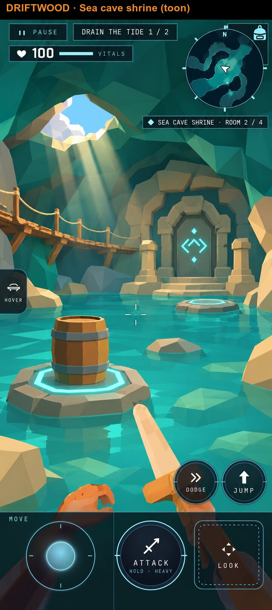
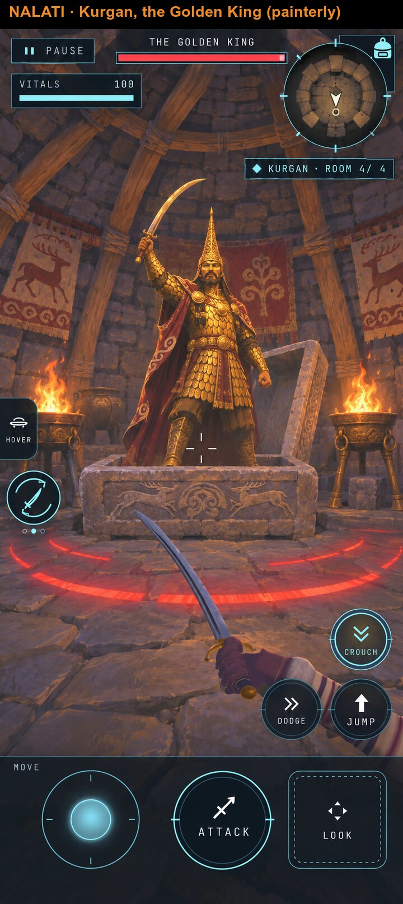
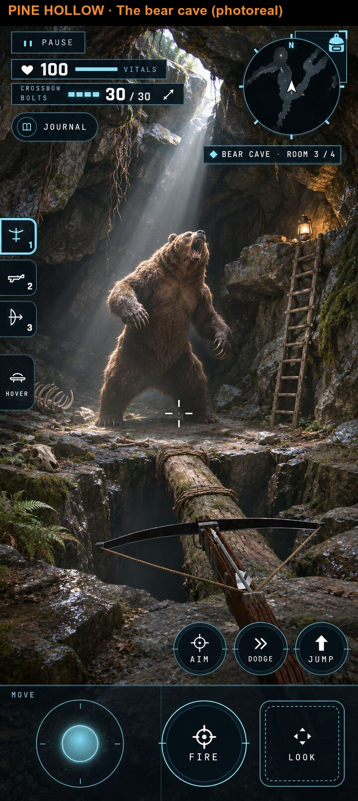
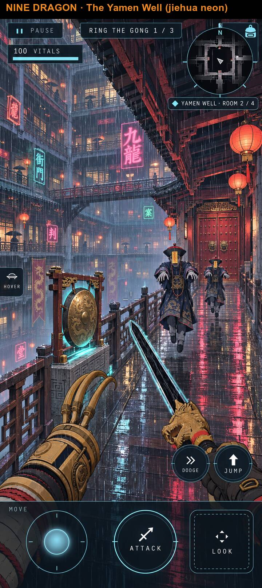
| Shard | Dungeon | Rooms | Mini-boss | Today |
|---|---|---|---|---|
| Driftwood | Sea cave shrine | barrel-on-plate tide puzzle, the wreck hold fight, the rope walkway | the Drowned Sailor | the tide puzzle and the wreck hold exist as two separate places |
| Nalati | The kurgan | a stone-door puzzle, balbal guards, the burial shaft | the Golden King | the kurgan room and the King exist; it is the boss only |
| Pine Hollow | The bear cave | a lantern puzzle, a log bridge, ladder to a ledge | Old Blackpaw | the cave interior exists; the bear waits at its mouth |
| Nine Dragon | The Yamen Well | gong plates, a jiangshi gallery fight, a bridge and a lift down | a Lantern Tong elite | the galleries and bridges are walkable; no enemies yet |
WHAT THE ENGINE NEEDS
One shared shrine host in the game layer, built from rows and checked against the host bar, with the
kitchen sink and one main shard as its two real users. Rows: shrine (name, entrance, exit, par time),
rooms (volume, checkpoint, kind), doors (opens on a flag), plates and
pushables, waves (room, spawn table, count), miniBoss (boss profile, room),
reward (loot, once) and completion (the card's fields).
| Piece | Today | |
|---|---|---|
| Portal in and out | walk-in portal rides (game/shardfile/walkInPortalRide.ts, portal links) | EXISTS |
| Interior rooms | cave interior (Pine, caveInterior.ts) and the arena room (Nalati's kurgan, game/boss/arenaRoom.ts): two different hosts | EXISTS |
| Doors | quest flag gates (format/questInteractions.ts), building doors | EXISTS |
| Climb pieces | ladder, rope deck (bridges), socket lifts, movers | EXISTS |
| Mini-boss | the boss host (game/Boss.ts, game/boss/: profiles, phases, telegraphs) and elites | EXISTS |
| Chest | loot bag and loot economy rows (a "chest" sound is already declared) | EXISTS |
| Pressure plates | only inside Driftwood's own script (barrels.as, plates A and B); the pushable barrel is a quest prop | MISSING |
| Sealed wave room | spawn tables and scripts exist; "doors shut until the wave is dead" and a wave counter do not | MISSING |
| Room checkpoint and reset | respawn goes to the last named place (game/LastPlace.ts); nothing resets a room's fight or boss | MISSING |
| Shrine card and best time | the complete card is one per shard (game/complete/ShardComplete.ts); a run timer exists in practice courses | MISSING |
OPEN QUESTIONS FOR JAKE
1. Is the Training Vault the kitchen sink's mini dungeon?
Recommended: yes. Zone 12 grows from one plate room into four rooms and a mini-boss, and quest step 6 becomes "Clear the Training Vault". No new ground needed.
2. What does dying in a mini dungeon cost?
Recommended: nothing but time. You come back at the door of the room you died in, the fight or boss restarts, solved puzzles stay solved, no lives limit.
3. Which main shard is the host's second real user?
Recommended: Driftwood's sea cave. Its plate puzzle, wreck hold and the Drowned Sailor already exist, so it proves the host with the least new content.